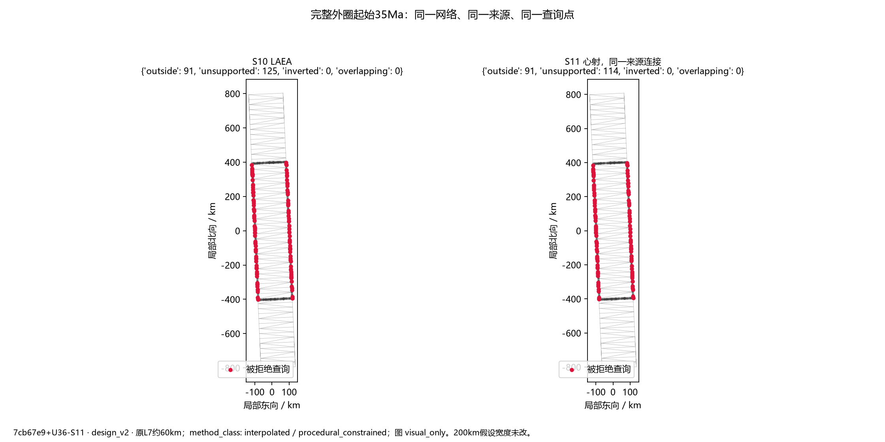
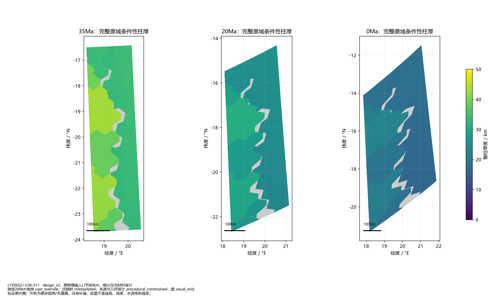
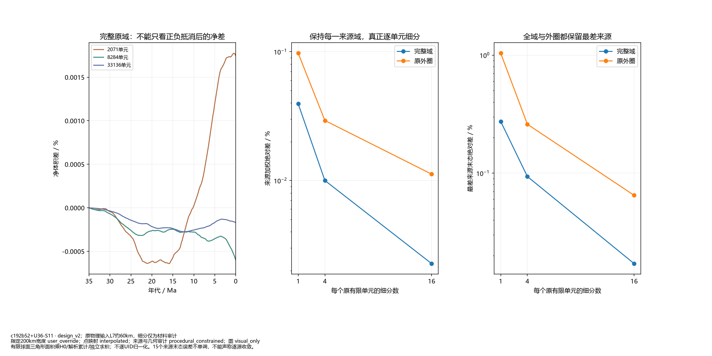
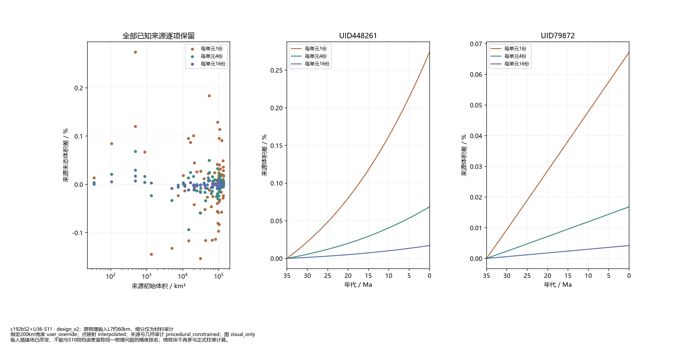
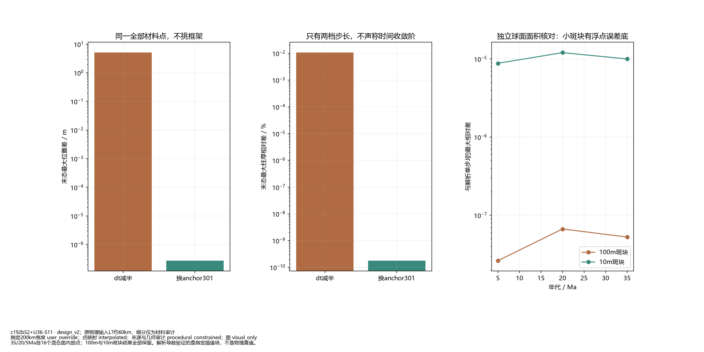

局部方法小试，未接全球/B5，阶段1未通过。


包含原外圈；灰色为原非陆壳/无覆盖。没有补值；此图不是盆底、地表、水深或新海岸。

有限球面三角形面积乘H0/解析累计J独立求积；不逐UID归一化。15个来源末态误差不单调，不能声称逐源收敛。

输入插值场已改变，不能与S10同档误差冒称同一物理问题的精度排名；微斑块不再参与正式柱厚计算。

35/20/5Ma各16个混合面内部点；100m与10m斑块结果全部保留。解析导数验证的是指定插值场，不是物理真值。